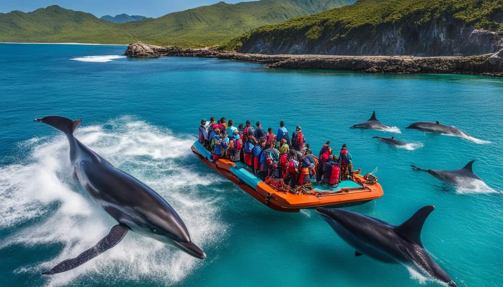
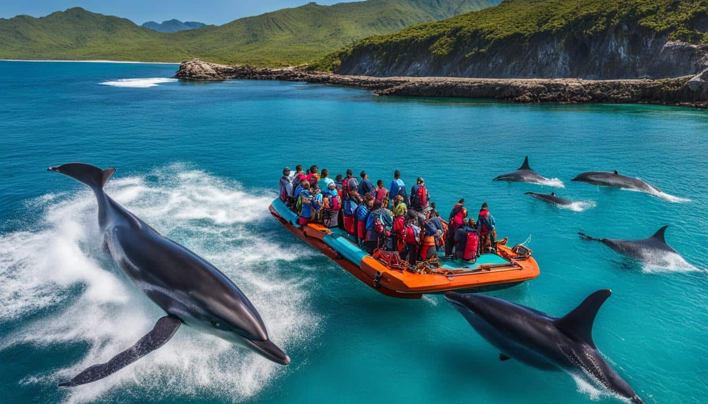

About Us
Welcome to Bais City Dolphin & Whale Watching, a place where you can connect with nature and experience the beauty of marine life. We are dedicated to offering unforgettable adventures, showing the magnificent dolphins and whales in their natural habitat.
Our Mission
Our mission is to provide eco-friendly, educational, and fun dolphin and whale-watching experiences, while promoting marine conservation and the sustainable development of Bais City.
Our History
Founded in 2010, Bais City Dolphin & Whale Watching began with a vision to showcase the incredible biodiversity of the region. Over the years, we have grown into a leading eco-tourism provider in Negros Oriental, committed to responsible wildlife tours.
 

Meet the Founder
Keroven Eruela
Lead Tour Guide
Wildlife Expert
Customer Relations